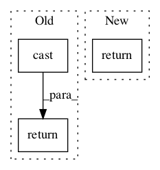

2a64a9d6d97a5c203bd58c0d039eb7e63c07e80f,snntoolbox/simulation/backends/inisim/ttfs.py,SpikeLayer,update_neurons,#SpikeLayer#,67

Before Change
// Compute post-synaptic potential.
psp = self.get_psp(output_spikes)
return k.cast(psp, k.floatx())
def linear_activation(self, mem):
Linear activation.
return k.cast(k.greater_equal(mem, self.v_thresh), k.floatx())
After Change
// Compute post-synaptic potential.
psp = self.get_psp(output_spikes)
return tf.cast(psp, self._floatx)
def linear_activation(self, mem):
Linear activation.
return tf.cast(tf.greater_equal(mem, self.v_thresh), self._floatx)
In pattern: SUPERPATTERN
Frequency: 4
Non-data size: 3
Instances
Project Name: NeuromorphicProcessorProject/snn_toolbox
Commit Name: 2a64a9d6d97a5c203bd58c0d039eb7e63c07e80f
Time:
Author: null
File Name: snntoolbox/simulation/backends/inisim/ttfs.py
Class Name: SpikeLayer
Method Name: update_neurons
Project Name: NeuromorphicProcessorProject/snn_toolbox
Commit Name: 2a64a9d6d97a5c203bd58c0d039eb7e63c07e80f
Time:
Author: null
File Name: snntoolbox/simulation/backends/inisim/ttfs.py
Class Name: SpikeMaxPooling2D
Method Name: call
Project Name: deepchem/deepchem
Commit Name: 64099a1d2d671705cd9d4a18f9413f4c3569bc86
Time:
Author: null
File Name: deepchem/models/tensorgraph/layers.py
Class Name: NeighborList
Method Name: get_cells
Project Name: tensorflow/transform
Commit Name: 1a41369c476c274f1dabef0037c94454526aad8a
Time:
Author: null
File Name: tensorflow_transform/tf_utils.py
Class Name:
Method Name: lookup_key